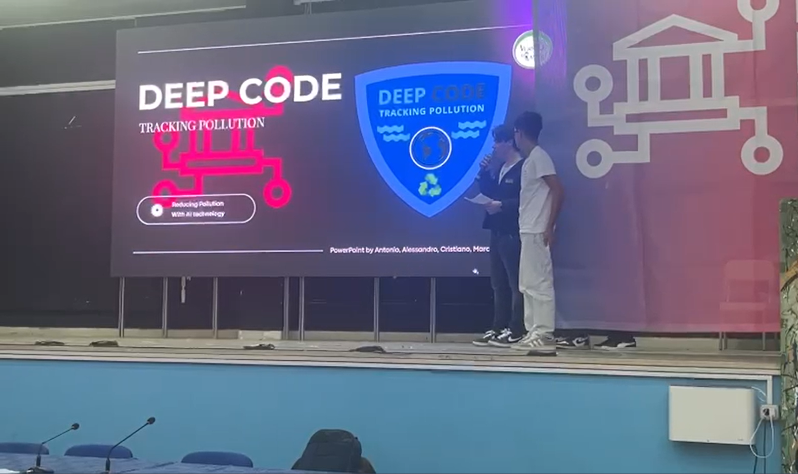

Salve, all'interno di questo SitoWeb progettato da Pascali Cristiano della 3C di Vernole, troverete delle informazioni riguardanti gli argomenti indicati qui sopra, con l'obiettivo di capire di cosa parlano, i loro benefici e come affrontare i rischi in modo responsabile.
Al giorno d'oggi il 27% del Piano Nazionale di Ripresa e Resilienza (PNRR) si dedica totalmente all'innovazione digitale in tutta Italia, con l'obiettivo di modernizzare il paese e automatizzare i servizi pubblici.
Al giorno d'oggi, moltissime delle azioni che facciamo, avvengono su internet, tra transazioni bancarie, messaggi a familiari, post sui social, avvengono tutte su internet.
Internet ci permette di connetterci con persone in tutto il mondo, accedere a informazioni istantaneamente, e creare comunità di interessi comuni.
Tramite internet, possiamo diffondere informazioni in modo rapido e efficace, raggiungendo un pubblico globale.
1. Foto riguardante il progetto DigiEduHack presentato il lavoro "EcoBreath" a martano dal gruppo DeapCode, con membri Pascali Cristiano, Frisenna Antonio, Pastore Alessandro della 3C del plesso di Vernole, e Raho Marco e De Pascali Nicolò della 3A del plesso di Castrì di Lecce, classificandosi al quarto posto.
2. Foto riguardante la premiazione del Certificato di Partecipazione al progetto dalla Commissione Europea.

Anche se non sembra, l'uso delle nuove tecnologie ha un impatto ambientale molto elevato, in quanto, per produrre dei dispositivi elettronici, oppure per alimentare dei server, si devono consumare molte risorse naturali, tra cui l'acqua. Utilizzando però, la tecnologia in modo responsabile e sostenibile, possiamo ridurre molto gli sprechi mondiali e l'inquinamento globale.
Avere una password sicura su internet, è fondamentale, e altrettanto proteggerla con un app di Autenticazione e un gestore password. Per creare una password sicura si consiglia di seguire le seguenti regole
È una truffa dove criminali fingono di essere aziende legittime per rubare i dati personali (password, numeri carta di credito).
Ad esempio: La nostra scuola, partecipa ogni anno a molti incontri riguardanti argomenti di attualità, di cittadinanza e di sicurezza, tra cui anche la CyberSecurity, per preparare gli studenti ad un uso consapevole, sicuro e responsabile delle nuove tecnologie e di internet.
Impatto Emotivo: Le vittime più deboli possono sviluppare depressione, ansia e un autostima molto bassa.
Impatto Sociale: Le vittime solitamente, come "Meccanismo di difesa" tendono ad isolarsi dalle persone e rimanere molto chiuse.
Impatto Psicologico: Le vittime a causa di forte stress e ansia possono sviluppare disturbi psicologici.